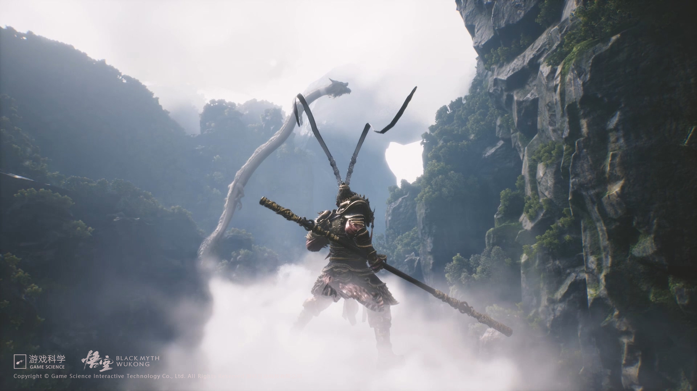
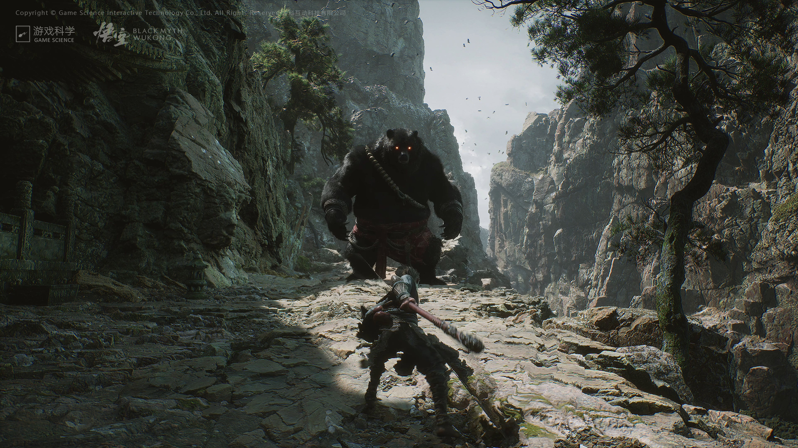
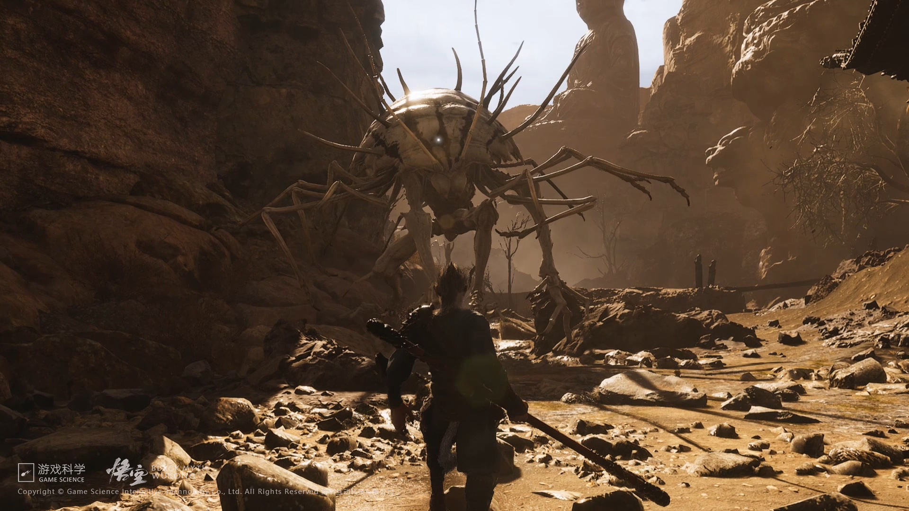
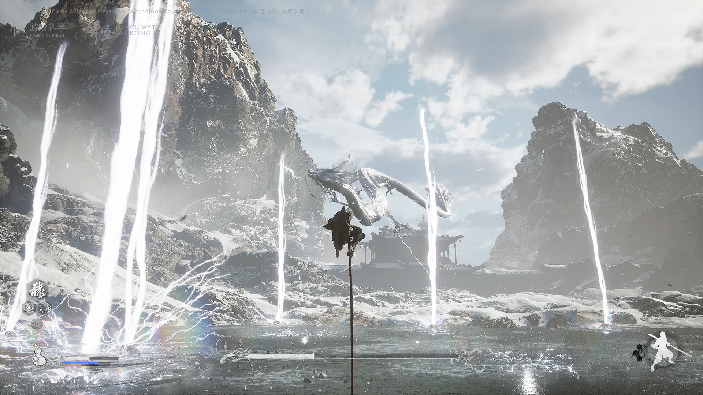
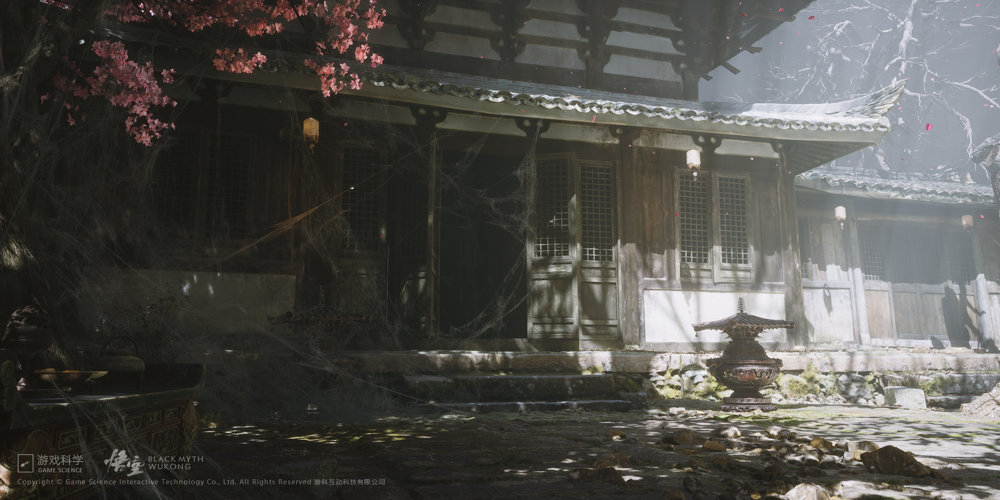

Game screenshot: Wukong encounters the White DragonGame screenshot: Wukong faces the Bull Demon

Game screenshot: Wukong confronts the Black Bear Spirit

Game screenshot: Wukong fighting against a bone monster

Game screenshot: Wukong fighting against the White DragonGame scene: ancinet temple

Game scene: home of the Spider MonstersGame scene: foggy villageGame scene: snow mountain